Every logo below is an editable Vixl document: text stays text, cards are shapes, wires are paths. Each was laid out by a script, run through vixl check, rendered, and reviewed before it made this page.
The shortlist was 02c, 02d, 03, 06 and 09. What they share: rounded cards, one wire joining them, an outlined card beside a filled one, the navy and amber palette, the tabbed index card and the tree. Each new direction crosses two or three of those and ships with its own app icon.
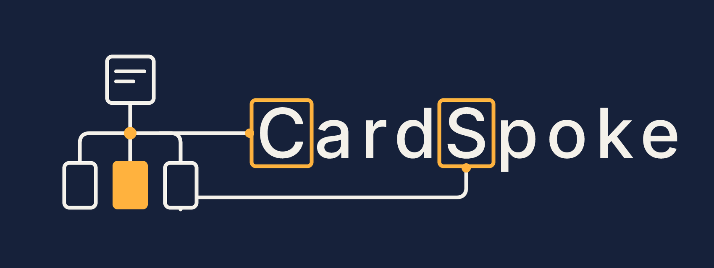
The card tree now is the wiring. Its bus runs straight into the framed C, and the right-hand child wires round to the framed S. The icon is just the tree.
Built from 03 card tree + 02c reverse + 02d · Inter 500
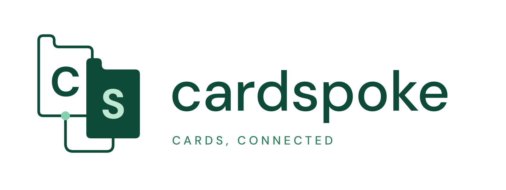
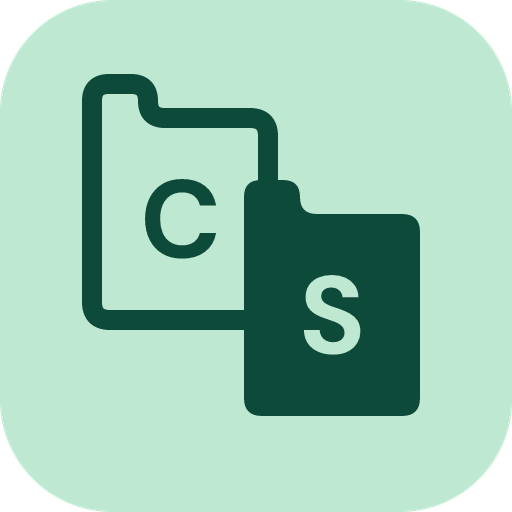
The C and S cards from 06, recut as the tabbed index cards from 09 in its mint and deep green. Matching tabs make them read as one stack of cards.
Built from 06 CS cards + 09 index tab · DM Sans 500 / 700
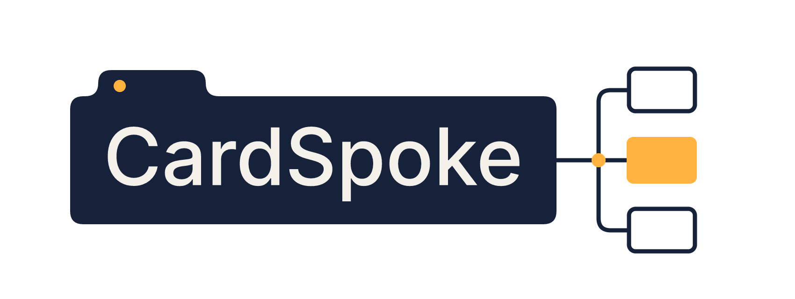
The name sits on a navy index card (09) whose right edge branches into child cards (03). One amber card marks the one that is open. The icon keeps the same structure with the name replaced by lines of text.
Built from 09 index tab + 03 card tree + 02 palette · Inter 500
The original SVG imported into Vixl, then rebuilt from scratch as layers and overlaid on it until the two matched. The type is Arimo, which shares Arial's metrics, at 164 px with 16 px tracking and 7 px strokes, all measured from the original.
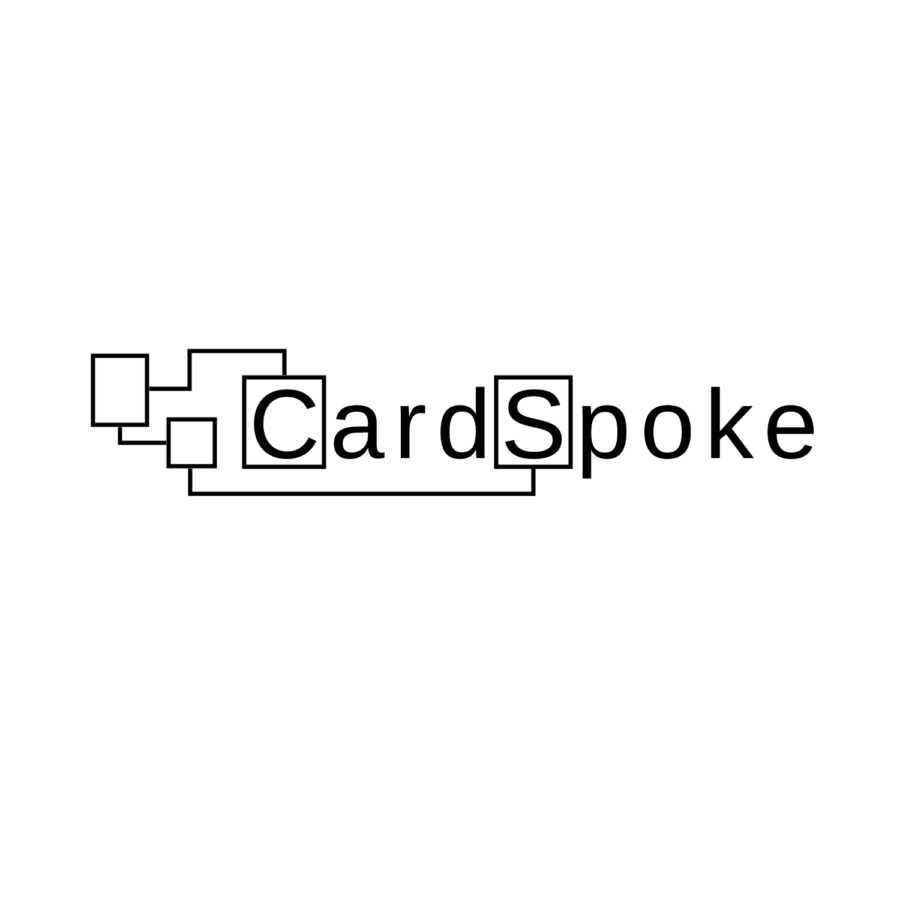
Faithful to the original: two loose cards on the left, wired into framed initials. The wire to the S frame now ends at the frame's centre.
Same concept, fewer accidents.
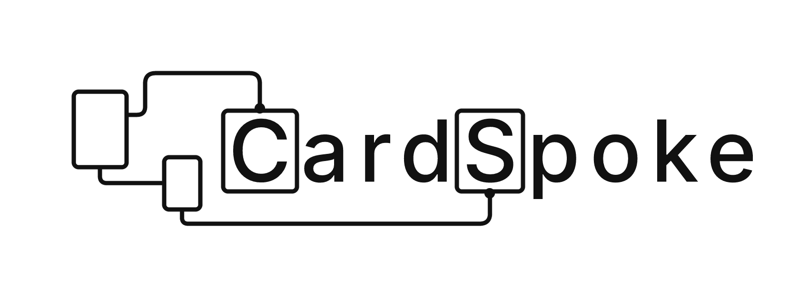
The one-colour master for print, favicons and stamps.
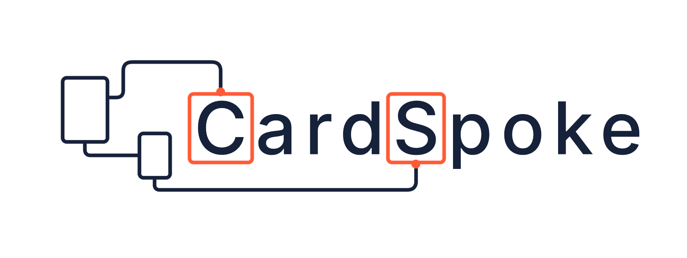
Navy ink with signal orange on the frames. The orange points to the two letters that name the product.
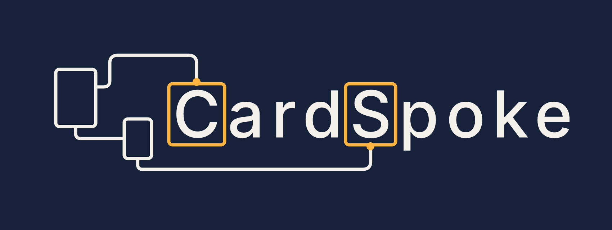
For dark UI: warm paper ink, amber frames. The cards are filled with the background so wires pass behind them.
The lockup reduced to one card, one wire, one card.
Still monoline cards, wiring and framed letters, but each one guesses at a different brief behind the original.
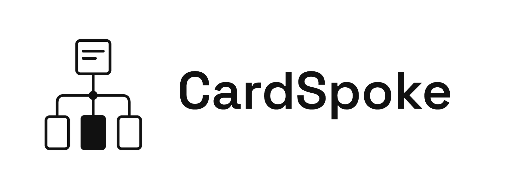
Brief: “show the hierarchy.” CardSpoke's core idea is cards nested in cards, so the mark is a parent card branching to three children, with the open one filled.
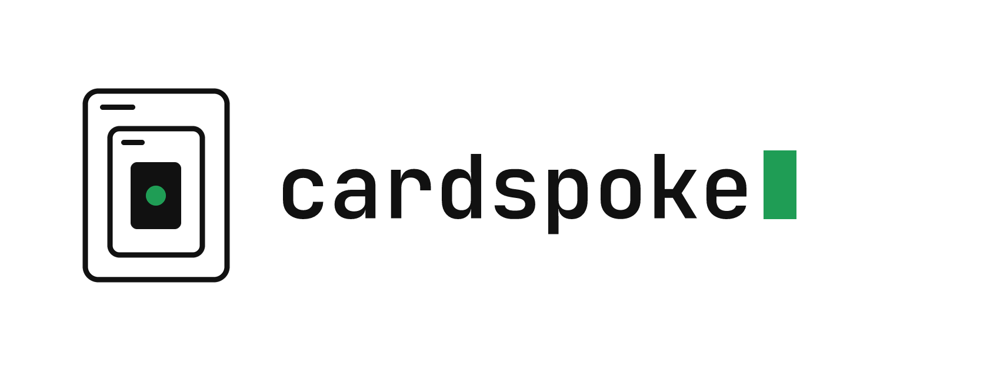
Brief: “your data stays with you.” Cards inside cards, with the data (the green dot) at the centre. The terminal-style wordmark and cursor suit a lightweight, plugin-friendly tool.
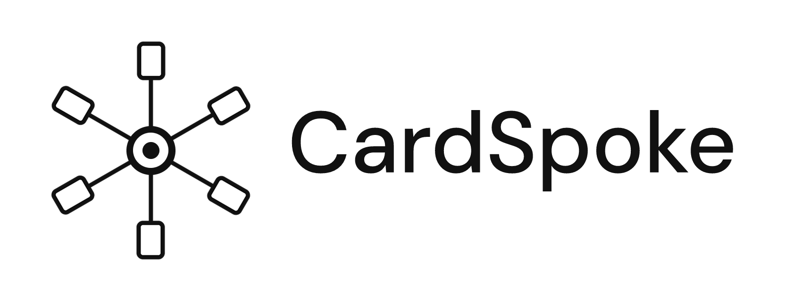
Brief: “one place for everything.” Takes “spoke” at its word: six cards around a hub. Built from one spoke and Vixl's radial-repeat.
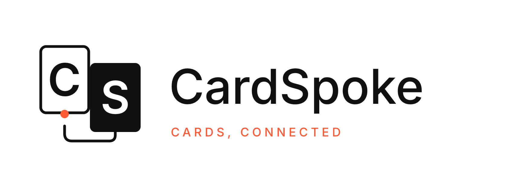
Brief: “a monogram we can stamp anywhere.” The framed C and S become two overlapping cards joined by the original's wire.
No monoline wiring. Colour, rotation, other typefaces and other shapes, to test how far the name can stretch.
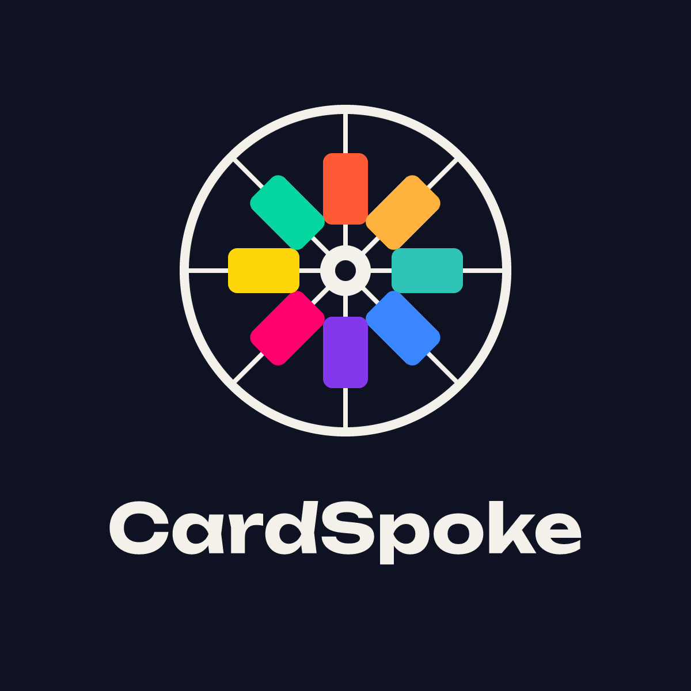
Brief: “make it fun to open.” A literal spoked wheel with eight coloured cards around the hub. Bright, toy-like and easy to animate.
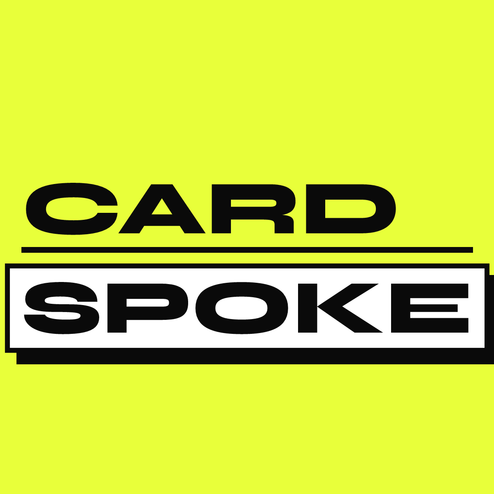
Brief: “loud, for a launch poster.” Stacked heavy type, with SPOKE on a white card slab casting a hard shadow.
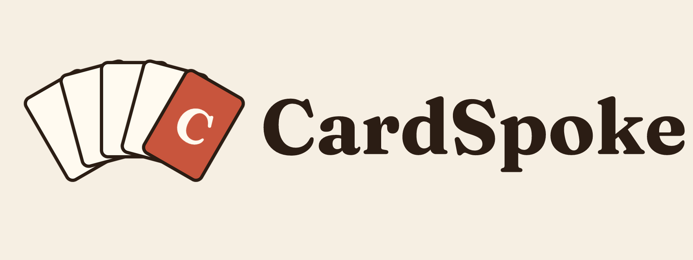
Brief: “a home for notes and ideas.” Warm and literary: a fanned hand of index cards, with the C on the front card.
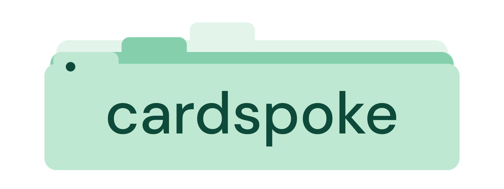
Brief: “friendly and calm.” The name sits on a soft tabbed index card, with two cards stacked behind it (built with Vixl's pathfinder).